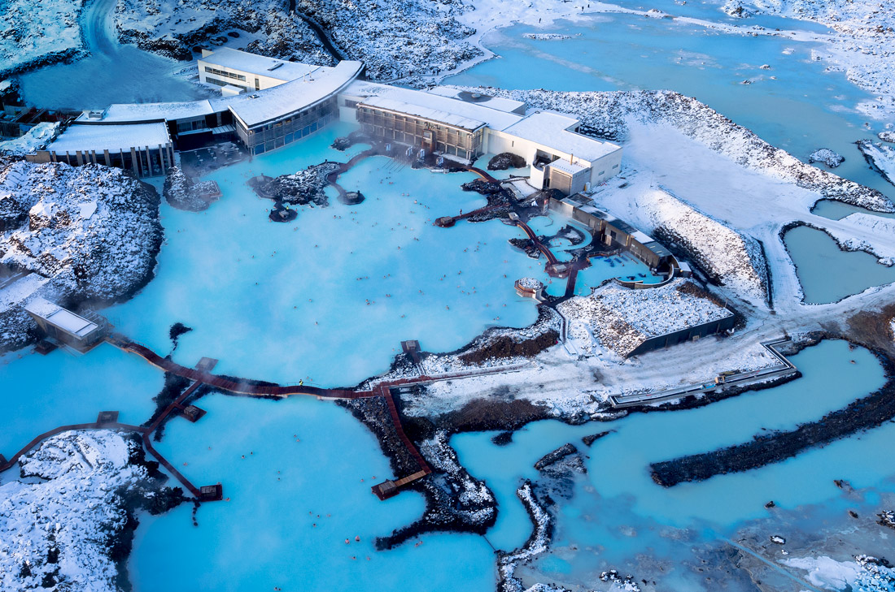

Most Beautiful Places in the World!
There are so many amazing places around the globe to see!
These breathtaking destinations are definitely worth bumping to the top of your travel bucket list whether you're looking to relax on a beach, get off the grid or explore a new international city—these are the most breathtaking locations to consider.
1. Venice, Italy

Venice is one of Italy’s most picturesque cities. Beautiful floating palaces of stone surrounded by an ancient network of canals. If traversing the canals with a be-striped gondolier sounds unbearably touristy, stick to the sidewalks and spectacular arched bridges to get your fill of this truly unique, wildly romantic floating city. Learn More.
Top Attractions
- St. Mark's Basilica
- Piazza San Marco
- Palazzo Ducaleand Bridge of Sighs
2. Bora Bora, French Polynesia

With turquoise lagoons, coral reefs and overwater bungalows, this small island in the South Pacific is basically heaven on Earth. Learn More.
Top Attractions
- Matira Beach
- Mount Otemanu
- Leopard Rays Trench
3. Blue Lagoon, Iceland
Located southwest of Reykjavik, Iceland's famous Blue Lagoon gets its trademark color from the silica-rich waters that feed it. And it isn't just pretty—the geothermal water is great for your skin too. Learn More.
Top Attractions
- Reykjanesviti
- Hvalsneskirkja
- Lava Walk
More Destinations
- Paris, France
- Eiffel Tour
- Louvre Museum
- Notre-Dame Cathedral
- Cape Town, South Africa
- Dubrovnik, Croatia
Best of luck with your travels, and be sure to send pictures and stories. We'd love to hear them!